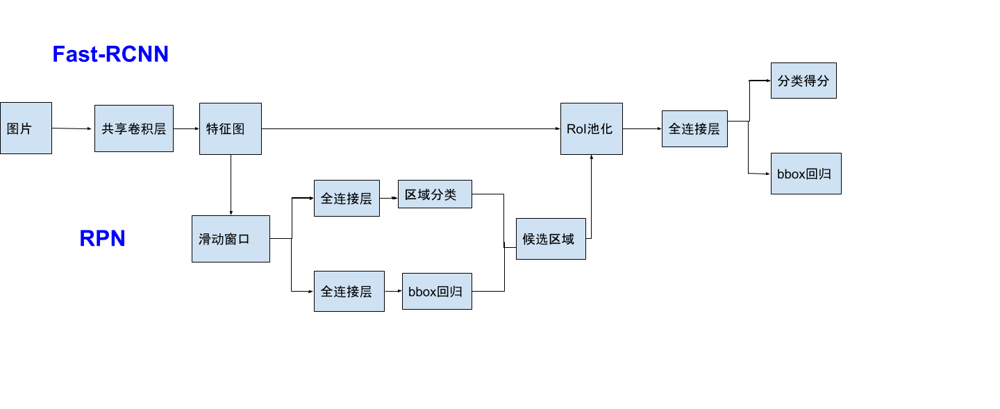
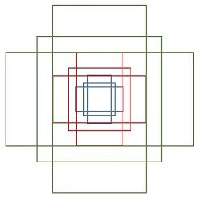
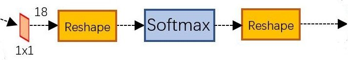
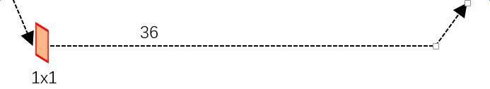

Faster-RCNN
Fast-RCNN回顾
尽管相比起RCNN，Fast-RCNN网络中有许多改进。但是对于候选区域的生成仍然使用selective search这一十分耗时的方法。 而在Faster-RCNN中对这一项进行了改进。
Faster-RCNN
我们先来看看Faster-RCNN整个网络的结构：

整个网络被分为两个部分，上半部分就是我们在Fast-RCNN中熟悉过的网络结构（除去候选区域生成部分），而下半部分就是用来生成候选区域的Region Proposal Network（RPN）
（有的博主认为在Fast-RCNN部分中有特有不共享的卷积层，但是在论文中并没有看到哪里提及）
Region Proposal Networks RPN网络
对于上半部分的Fast-RCNN网络已经熟悉了，而RPN网络是这次更新的重点。
看一下RPN网络的内部结构：

可以看到RPN网络实际分为2条线，上面一条通过softmax分类anchors获得positive和negative分类，下面一条用于计算对于anchors的bounding box regression偏移量，以获得精确的proposal。而最后的Proposal层则负责综合positive anchors和对应bounding box regression偏移量获取proposals，同时剔除太小和超出边界的proposals。
1.滑动窗口
RPN网络的第一部分，也就是在共享卷积层最后一层conv5之后做了一个$3 \times 3$的卷积，相当于融合了周围$3 \times 3$的空间信息，同时通道数保持256-d不变。注意这里的卷积都采用了$3 \times 3$的卷积核，padding为1，stride也为1。那么 $out = \frac{I-2 \times 1 - 3}{1}=I$ 所以输出的特征图大小不变。
2.Anchors
所谓Anchors就是一系列的矩形（9个）长宽比为大约为$\{1: 1,1: 2,2: 1\}$三种，这就是检测中常用的多尺度方法。

那么这9个anchors是做什么的呢？如下图，我们在特征图上的每一个点都使用这9中anchors作为检测框。假设特征图的大小为 $M \times N$ ，那么我们可以把这 $M\times N \times 9$ 个检测框类比为Fast-RCNN中selective search算法在区域合并后，NMS之前的检测框，这些检测框的位置都十分不准确，但是我们后面还会有两次bbox回归来调整位置。

同时，全部anchors拿去训练太多了，训练程序会在合适的anchors中随机选取128个postive anchors+128个negative anchors进行训练
3.区域分类
一副MxN大小的矩阵送入Faster RCNN网络后，到RPN网络变为(M/16)x(N/16)，不妨设 W=M/16，H=N/16。在进入reshape与softmax之前，先做了1x1卷积，如下图：

前面的$1 \times 1$卷积对应结构图中的全连接层，softmax对应区域分类。这一部分的网络结构就是RPN中用来判定anchors是positive 或者 negative的。
1 | layer { |
上面是$1 \times 1$卷积的prototxt定义，num_output为18，也就是说输出维度是$M \times N \times 18$，这个18就是$9\times 2$，9中anchor，每种有positive和negative两种可能。
4.bbox回归
bbox回归在文章RCNN中已经了解过，这里直接看这一部分的网络结构：

这里同样使用了$1\times1卷积$，但是在prototxt中的定义却不一样：
1 | layer { |
这里的num_output为36，也就是$9 \times 4$，4就是bbox回归的四个线性映射$d_{*}(P)$
下面简单计算一下这两部分网络的输出，假设我们原始输入图片为为$800 \times 600$，使用VGG网络下采样16倍，anchor的数量为9，那么应该就有：
- $\frac{800}{16} \times \frac{600}{16} \times 2 \times 9$ 用于判断 positve 或 negative
- $\frac{800}{16} \times \frac{600}{16} \times 4 \times 9$ 用于bbox的回归
Proposal Layer
Proposal Layer负责综合所有 $\left[d_{x}(A), d_{y}(A), d_{w}(A), d_{h}(A)\right]$ 变换量和positive anchors，计算出精准的proposal，送入后续RoI Pooling Layer。先来看看Proposal Layer的caffe prototxt定义：
1 | layer { |
Proposal Layer有3个输入：positive vs negative anchors分类器结果rpn_cls_prob_reshape，对应的bbox reg的 $\left[d_{x}(A), d_{y}(A), d_{w}(A), d_{h}(A)\right]$ 变换量rpn_bbox_pred，以及im_info；另外还有参数feat_stride=16
im_info:对于一副任意大小PxQ图像，传入Faster RCNN前首先reshape到固定MxN，im_info=[M, N, scale_factor]则保存了此次缩放的所有信息。然后经过Conv Layers，经过4次pooling变为WxH=(M/16)x(N/16)大小，其中feature_stride=16则保存了该信息，用于计算anchor偏移量。
Proposal layer具体的流程是：
- 生成anchors，利用 $\left[d_{x}(A), d_{y}(A), d_{w}(A), d_{h}(A)\right]$ 对所有的anchors做bbox regression回归
- 按照输入的positive softmax scores由大到小排序anchors，提取前pre_nms_topN(e.g. 6000)个anchors，即提取修正位置后的positive anchors。
- 限定超出图像边界的positive anchors为图像边界（防止后续roi pooling时proposal超出图像边界）
- 剔除非常小的positive anchors
- 对剩余的positive anchors进行NMS
- 输出proposal=[x1, y1, x2, y2]，注意，由于在第三步中将anchors映射回原图判断是否超出边界，所以这里输出的proposal是对应MxN输入图像尺度的，这点在后续网络中有用。
总结一下RPN网络：
- 在特征图上生成anchors
- 分类anchor，选择positive
- 对positive anchors做bbox回归
- proposal层生成候选区域
Faster-RCNN网络的交替训练
在论文中提到使用了Step ALternating Training（交替训练）的方法，具体步骤如下：
- 对RPN网络进行预训练。使用ImageNet网络进行了有监督预训练，利用其训练好的网络参数初始化
- 对Fast-RCNN网络用ImageNet网络进行了有监督预训练。
- 使用第一步RPN网络生成的候选区域，对第二步的Fast-RCNN网络进行以检测为目的的微调训练，注意此时两个网络没有共享卷积层。
- 使用第三步中微调后的网络重新初始化RPN网络，但此时freez共享的卷积层（学习率为0），仅仅更新RPN独有的网络。
- 依然固定共享卷积层，使用第三步中生成的候选区域，对Fast-RCNN网络独有的部分进行微调
到此训练结束，作者提到可以多次循环这种交替训练，但是他们并没有发现什么提升。
参考资料：
https://arxiv.org/pdf/1506.01497.pdf